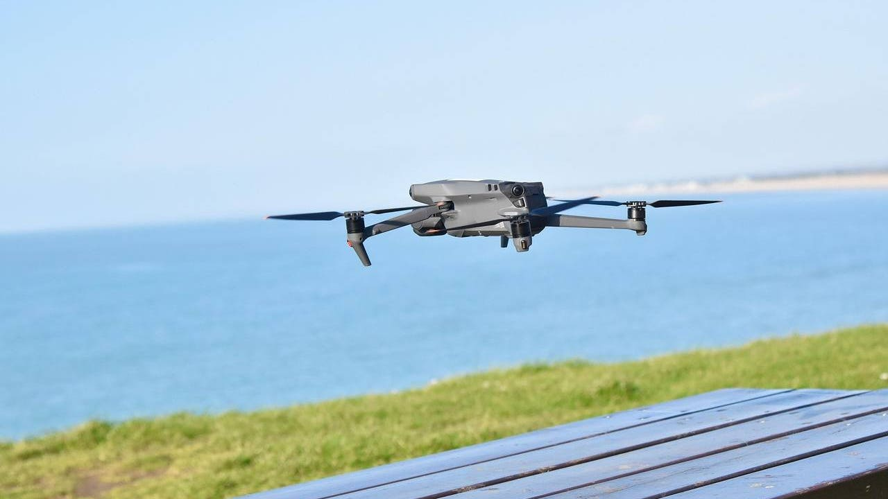
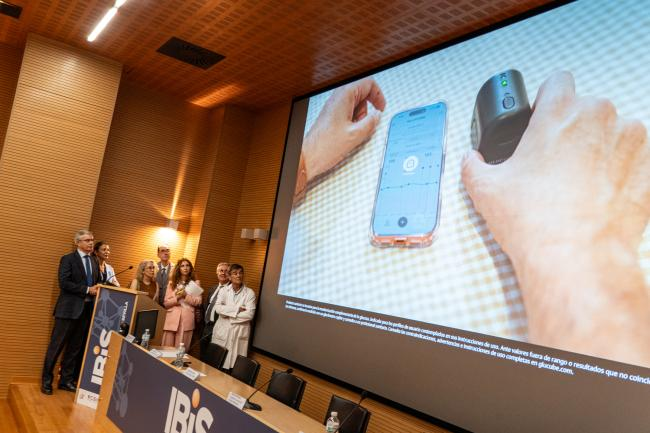

Aprendizaje de drones autónomos

Investigadores de la Universidad Politécnica de Madrid demuestran que el aprendizaje por refuerzo permite a drones autónomos interceptar de forma eficiente vehículos aéreos no autorizados.

Investigadores de la Universidad Politécnica de Madrid demuestran que el aprendizaje por refuerzo permite a drones autónomos interceptar de forma eficiente vehículos aéreos no autorizados.

Igluco Tech, la Universidad de Sevilla e investigadores del sistema sanitario han hecho posible este avance en el seguimiento continuo de la diabetes.